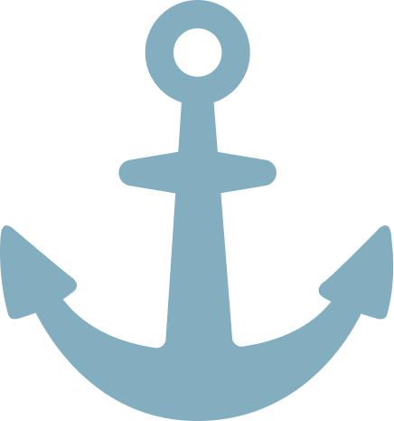

Shipyard Cargo Management SystemSecure, transparent, and efficient cargo tracking powered by blockchain technology. Revolutionize your supply chain with real-time visibility, smart contracts, and immutable records for complete peace of mind.
Platform Features
Cargo Registration Module
Admin-exclusive registration system for securely documenting and onboarding new cargo into the blockchain network with immutable records from the point of origin.
AdminCargo View (User)
User-friendly interface allowing authorized users to view detailed cargo information, track shipment status, and access blockchain-verified documentation in real-time.
UserCargo Management (Admin)
Comprehensive admin dashboard for viewing, updating, and managing cargo records with complete audit trails and tamper-proof blockchain verification.
AdminCargo Tracking Module
Real-time GPS-enabled tracking of cargo throughout its journey with location history, condition monitoring, and blockchain-verified checkpoint validations.
Real-TimeSmart Contract Module
Automated smart contracts for cargo release conditions, payment settlements, and agreement enforcement with complete transparency and immutable execution records.
AutomatedAudit Logs
Complete immutable audit trail of all cargo transactions, user actions, and system modifications with cryptographic verification and forensic analysis capabilities.
SecurityAbout Shipyard_PK Platform
The Shipyard_PK Cargo Management System is a revolutionary blockchain-based platform designed to ensure complete cargo integrity throughout the supply chain. Our primary mission is to guarantee that cargo cannot be tampered with at any stage of transit, using immutable distributed ledger technology, cryptographic verification, and comprehensive audit trails to provide absolute transparency and security.
Why Choose Shipyard_PK?
- Tamper-Proof Records: Immutable blockchain records ensure cargo cannot be altered at any stage of transportation
- Real-Time Tracking: GPS-enabled tracking with blockchain verification prevents cargo diversion and unauthorized access
- Smart Contracts: Automated, enforced agreements eliminate manual intervention and potential tampering points
- Complete Audit Trails: Cryptographic audit logs verify every transaction and modification with forensic certainty
- Role-Based Access: Admin and user permissions ensure only authorized personnel can view or modify cargo records
- Cargo Verification: Blockchain-verified checkpoints at each stage validate cargo authenticity and integrity
- Immutable Documentation: Digital certificates and manifests cannot be forged or altered once registered
- 24/7 Monitoring: Continuous system monitoring and alert mechanisms detect any attempted tampering immediately
Whether you're a shipping company protecting valuable cargo, a customs authority verifying authenticity, a port operator managing secure operations, or a logistics provider ensuring supply chain integrity, Shipyard_PK provides the comprehensive anti-tampering protection and blockchain verification you need to guarantee cargo security throughout the maritime supply chain.